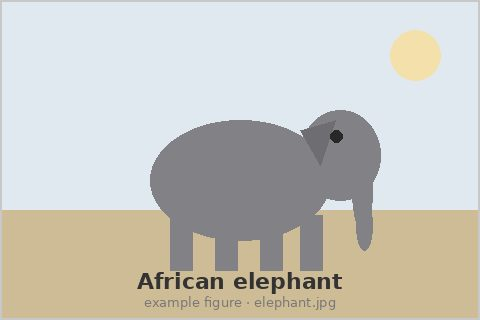
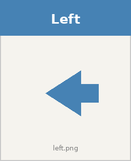
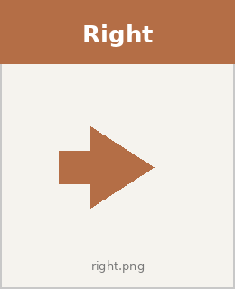

Exhibited artifacts — figures, tables, diagrams, and the surfaces that frame them, with their captions.
<fig>Semantic role: figure. Compiles to eHTML <fig>.
Registers:
- Canonical:
<fig> - Alias:
<figure>→<fig>
<fig src=elephant.jpg | An adult African elephant.>

An adult African elephant.
The simplest case. The src kwarg generates the <img>; the pipe content generates the figcaption. The alt text defaults to the figcaption text when not specified explicitly. The eHTML element is HTML-native <figure> (not the custom-element <fig>) because the HTML rendering surface is the HTML5 native element while the enscribe canonical name follows JATS’s shorter <fig>.
<figure src=elephant.jpg | An adult African elephant.>
An adult African elephant.
<figure> is the authoring alias. The normalize-to-canonical gate rewrites the tagname to fig early; the rendered output is the same.
<fig #elephant src=elephant.jpg align=right alt="A photograph of an elephant" | An adult African elephant photographed in Tanzania.>
An adult African elephant photographed in Tanzania.
The id enables cross-referencing with <ref @elephant> (or the canonical <ref @fig:elephant> colon-prefix form). Numbered by default; the figcaption gets a “Figure N.” label span prepended.
<fig #revenue-table type=table |
<table>
<tr><th>Quarter</th><th>Revenue</th></tr>
<tr><td>Q1</td><td>$100M</td></tr>
<tr><td>Q2</td><td>$120M</td></tr>
</table>
Quarterly revenue for fiscal year 2024.
>
| Quarter | Revenue |
|---|---|
| Q1 | $100M |
| Q2 | $120M |
Quarterly revenue for fiscal year 2024.
A figure without src. The content (a table) is preserved as-is; the trailing line becomes the figcaption. Author convention is to put the caption text on its own line at the end of the content.
| attribute | kind | values / default | notes |
|---|---|---|---|
src |
kwarg | URL of an image to embed. The handler generates an <img> child element from this kwarg. When src is present, the figure renders as an image with a caption. Asset reference (#190): when src is @id it pulls in an asset declared inside <data>, either embedded — <fig #id png>base64</fig> (the format flag is one of png, jpg, jpeg, svg, gif, webp) — or external — <fig #id src="path" />. An embedded reference resolves to a data:<mime>;base64,… URI; an external one resolves to the declared path (rebased master-relative for a cross-file child) as a plain <img src="path">. The placed figure adopts the id, so it numbers and cross-references (<ref @id>) as that id; the <data> declaration itself renders nothing. Re-placing one asset is legitimate — each <fig src="@id" /> renders and numbers, but only the first adopts the id (the cross-reference anchor); give a later placement its own #id to reference it. An unresolved @id, or an embedded format outside the list above, renders a visible asset-error rather than a broken image. Assets merge project-wide across an assembled document; the same id declared in two <data> blocks is last-wins with a visible collision flag. (JATS <graphic> export of assets is the remaining slice.) |
|
alt |
kwarg | Alt text for the generated <img> when src is present. Recommended for accessibility but not required: when alt is not specified, the handler falls back to the figcaption text. Ignored when src is absent. |
|
align |
kwarg | left right center full-width |
How the figure is positioned in the document flow. Affects rendering only; not exported to JATS. |
width |
kwarg | Suggested rendered width. Can be a CSS length (e.g., “300px”, “50%”) or a relative value. | |
type |
kwarg | image table code equation diagram multi-part other |
Optional classification of the figure’s content. Maps to JATS fig content-type or to wrapping element choices. |
caption |
kwarg | Optional caption text. The caption= kwarg lifts to a <caption> child tag at the normalize-to-canonical gate (caption-as-content) — the same way <meta> / <author> kwargs lift to their child tags — so a <caption> child can equivalently be authored directly. The figure handler also still accepts the legacy figure-as-pipe-caption form: when no <caption> child is present, the pipe content becomes the caption. (title= lifts to a <title> child the same way.) |
|
+numbered |
boolean | default true |
Whether this figure participates in the document-wide figure sequence. Use +numbered (default) to number, -numbered to suppress. Can also be written as numbered=true / numbered=false. The config key number-figures=false suppresses all figures unless overridden per-element with +numbered. |
+border |
boolean | default false |
The frameable surface. When +border is set, the rendered
frameable-border class so theme stylesheets can draw the outline box per the frameable convention. Off by default.
|
<table>Semantic role: table. Compiles to eHTML <table>.
Registers:
- Canonical:
<table>
| Name | Price |
|------|-------|
| foo | 1 |
| bar | 2 |
| Name | Price |
|---|---|
| foo | 1 |
| bar | 2 |
Plain markdown table syntax (via remark-gfm). The most common authoring path for simple tables. No explicit enscribe tags needed.
<csv | name,price
foo,1
bar,2
>
| name | price |
|---|---|
| foo | 1 |
| bar | 2 |
The <csv> shorthand lowers to <table csv> (the standalone <csv> / <tsv> tags were retired to these gate shorthands) and renders today — the table above is its output, parsed from the CSV source by the table handler’s csv engine. <csv | ... > and the qualifying form <table csv | ... > converge to the same parsed table; only the authoring shorthand differs. JSON data uses the qualifying <table json | ... > form — there is no standalone <json> shorthand. See the <csv> vocabulary entry for engine attributes (header control, alignment, etc.).
<table #revenue type=results>
<caption | Quarterly revenue>
<tr><th>Quarter</th><th>Revenue</th></tr>
<tr><td>Q1</td><td>$100M</td></tr>
<tr><td>Q2</td><td>$120M</td></tr>
</table>
| Quarter | Revenue |
|---|---|
| Q1 | $100M |
| Q2 | $120M |
Explicit table with cells, used when fine control over structure or attributes is needed.
| attribute | kind | values / default | notes |
|---|---|---|---|
parse-columns |
kwarg | #21: comma-separated list of column names (by header) whose cells parse as Enscribe inline markup, leaving the other columns literal — the common mixed case (a prose column among data columns). Adds the named columns on top of the parse-text / config decision. Headerless tables can’t match by name, so use +parse-text there. A parsed column parses in HTML AND JATS; the stored data payload is never mutated (a display directive on the table). | |
caption |
kwarg | Short-form caption as a kwarg string. Renders as <caption> inside the table element. When numbered, a “Table N.” label span is prepended. Long-form caption (<caption | ...> nested tag) is deferred. |
|
src |
kwarg | Path to an external data file. Relative to the document’s assets directory (configurable via the assetsDir interpreter option). The content handler reads the file at interpretation time. | |
type |
kwarg | data layout comparison schedule results other |
Optional semantic classification. Affects styling and JATS export. |
+headers |
boolean | default true |
Whether the first row of the data is a header row. Default true. Use -headers to suppress thead generation; rows render as tbody only. |
+numbered |
boolean | default true |
Whether this table is counted in the numbered table sequence and receives a “Table N.” label prefix in its caption. |
+parse-text |
boolean | default false |
#21: whether ALL cells of a DATA-format table parse as Enscribe inline markup. Default false (data-format cells are literal — the safe baseline). +parse-text parses every cell; -parse-text forces literal, overriding a document-wide
|
<caption>Semantic role: caption. Compiles to eHTML <caption>.
A caption is the descriptive text rendered with a frameable — a figure, table, diagram, or boxed aside. Author it as a <caption> child of the frameable, or as the caption= kwarg on the frameable; the kwarg lifts to a <caption> child at the normalize-to-canonical gate, so the two forms are equivalent. (For a figure, the pipe content is the shorthand caption — <fig src=… | caption> — and the explicit <caption> child is the long form.)
Registers:
- Canonical:
<caption>(child of a frameable)
<table>
<caption | Annual rainfall by region, 2020–2024.>
| region | mm |
|---|---|
| Congo basin | 1600 |
| Serengeti | 800 |
</table>
Child-tag form. The caption renders with the frameable, and the “Table N.” / “Figure N.” label folds in when the frameable is numbered.
<fig src=elephant.jpg caption="A forest elephant in the Congo basin." />
A forest elephant in the Congo basin.
Kwarg form. Equivalent to the child-tag form — caption= lifts to a <caption> child at the gate.
<caption> takes no attributes of its own. Its content is prose (it may carry inline formatting and cross-references). It is always a child of a frameable; a bare <caption> outside one has nothing to attach to and renders as an unknown tag.
<diagram>Semantic role: diagram. Compiles to eHTML <diagram>.
Registers:
- Canonical:
<diagram>
<diagram mermaid>
graph LR
A[Start] --> B{Decision}
B -->|yes| C[OK]
B -->|no| D[Stop]
</diagram>
graph LR
A[Start] --> B{Decision}
B -->|yes| C[OK]
B -->|no| D[Stop]
The mermaid format word selects the Mermaid engine. The handler emits the same <pre class="mermaid" data-enscribe-dsl="mermaid"> contract as the legacy <mermaid> shorthand expands to.
<diagram abc>
X:1
T:Scale
K:C
CDEFGABc
</diagram>
X:1 T:Scale K:C CDEFGABc
The abc format word selects the abcjs engine.
| attribute | kind | values / default | notes |
|---|---|---|---|
caption |
kwarg | Optional caption text. When present the handler emits a <figcaption> sibling after the rendered diagram (the external-DSL sibling-caption layout). When the diagram participates in figure numbering the caption carries a “Figure N.” label prefix. |
<svg>Semantic role: svg. Compiles to eHTML <svg>.
Registers:
- Canonical:
<svg>
<svg -numbered viewBox="0 0 100 100" width=200 height=200 |
<circle cx="50" cy="50" r="40" fill="blue" />
>
A lone inline SVG. <svg> is numbered by default (it shares the figure counter), so -numbered is what opts out of framing for a purely inline graphic. The source is opaque pipe content; the attributes pass through to the rendered <svg> element.
<svg #fig:diagram viewBox="0 0 100 100" caption="A simple circle" |
<circle cx="50" cy="50" r="40" />
>
Captioned and numbered → framed by the ordinary frameable rule: the handler wraps the <svg> in a <figure> with the <figcaption> as a sibling inside the wrapper (figcaption is not a valid child of <svg>). Shares the figure counter with <fig>; <ref @fig:diagram> resolves to “Figure N”.
| attribute | kind | values / default | notes |
|---|---|---|---|
width |
kwarg | SVG width attribute. CSS length or unitless number. Maps directly to the rendered
|
|
height |
kwarg | SVG height attribute. Same shape as width. | |
viewBox |
kwarg | SVG viewBox attribute. Defines the coordinate system. Passes through to the rendered
|
|
caption |
kwarg | Optional caption text rendered in a sibling <figcaption>. The caption= kwarg lifts to a <caption> child tag at the normalize-to-canonical gate, matching the frameable convention. |
|
+numbered |
boolean | default true |
Whether this SVG participates in the document-wide figure sequence (shares the figure counter with
|
+border |
boolean | default false |
The frameable surface. When +border is set, the rendered
frameable-border class.
|
<frame>Semantic role: frame. Compiles to eHTML <frame>.
Registers:
- Canonical:
<frame>
<frame | A short callout.>
A short callout.
The simplest case. The handler emits a <figure> wrapper (the vocab html_output.element frame is only the lookup key for handler-strategy entries — the handler controls the actual element). +border is default on for <frame>, so the class appears automatically.
<frame type=note title="Important" |
Make sure to read this carefully.
>
Make sure to read this carefully.
With a title rendered at the top.
<frame #fig:method-box +numbered caption="Workflow steps" |
1. Collect data.
2. Clean.
3. Model.
>
- Collect data.
- Clean.
- Model.
Workflow steps
Numbered frame, opted in via +numbered. Shares the figure counter with <fig>/<svg>/<mermaid>/<abc>.
| attribute | kind | values / default | notes |
|---|---|---|---|
title |
kwarg | Optional title rendered at the top of the frame (the frameable title-top convention), as a title= kwarg or a
|
|
caption |
kwarg | Optional caption text rendered at the bottom of the frame (the frameable caption-bottom convention). The caption= kwarg lifts to a <caption> child tag at the gate. |
|
type |
kwarg | Optional classification of what the frame contains (note, warning, tip, theorem-block, etc.), preserved as the data-frame-type attribute. Since
|
|
+numbered |
boolean | default false |
Whether this frame participates in the document-wide figure sequence. Off by default for frame (unlike
|
+border |
boolean | default true |
The frameable surface. On by default for frame (unlike
|
<minipage>Semantic role: minipage. Compiles to eHTML <minipage>.
Registers:
- Canonical:
<minipage>
<minipage | Two panels side by side.>
Two panels side by side.
The simplest case. The handler emits a <figure> wrapper (the vocab html_output.element minipage is only the lookup key for handler-strategy entries — the handler controls the actual element). +border is default on for <minipage>, so the class appears automatically. The body renders as sealed eHTML.
<minipage #mp:compare +numbered caption="Side-by-side comparison" |
A figure here counts privately.
<fig #fig:left src="left.png" | Left panel.>
<fig #fig:right src="right.png" | Right panel.>
>
A figure here counts privately.

Left panel.

Right panel.
Numbered minipage, opted in via +numbered. It counts in its own “Minipage N” series — <ref @mp:compare> resolves to “minipage 1”. The two inner figures number 1 and 2 in the minipage’s PRIVATE figure counter, NOT the document’s: a document <fig> elsewhere is unaffected, and an outside <ref @fig:left> is a normal not-found ref-error (the seal forbids inbound references to the body).
| attribute | kind | values / default | notes |
|---|---|---|---|
title |
kwarg | Optional title rendered at the top of the minipage (the frameable title-top convention). Authored as a title= kwarg. Because the body is opaque (a sealed sub-document), the kwarg stays a kwarg — it is not lifted to a
|
|
caption |
kwarg | Optional caption rendered at the bottom of the minipage (the frameable caption-bottom convention), with the “Minipage N.” label folded in when numbered. Authored as a caption= kwarg (kwarg-only, for the same opaque-body reason as title). | |
+numbered |
boolean | default false |
Whether this minipage is numbered. Off by default (most minipages are layout boxes, not cross-referenced floats). When +numbered, the minipage counts in its OWN “Minipage N” series (the minipage counter, config key number-minipages, ref-prefix mp) — NOT the figure counter. A sealed sub-document is distinct from a figure, and its private body numbering must not touch the document’s figure sequence (#115). |
+border |
boolean | default true |
The frameable surface. On by default for minipage — the visual box is the point (a minipage sets its sealed content apart, like
|